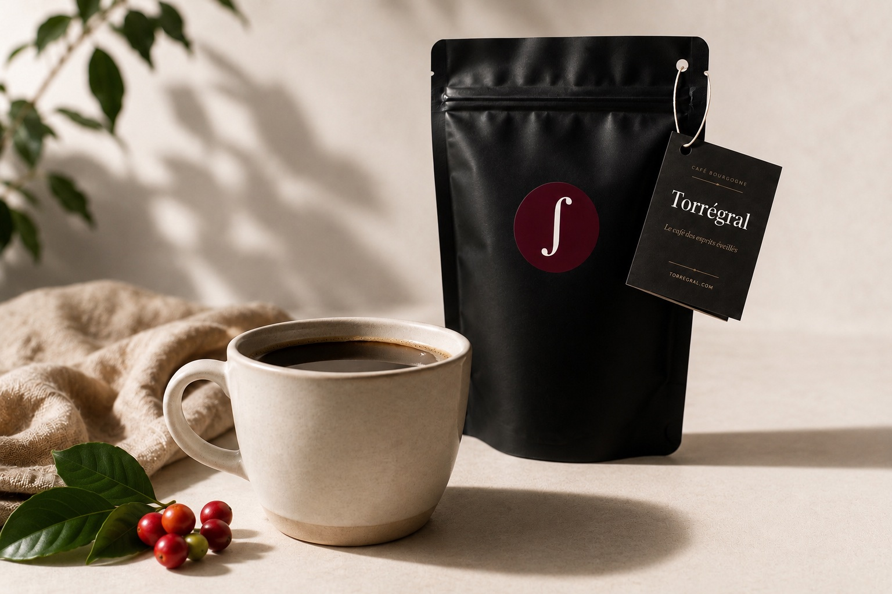
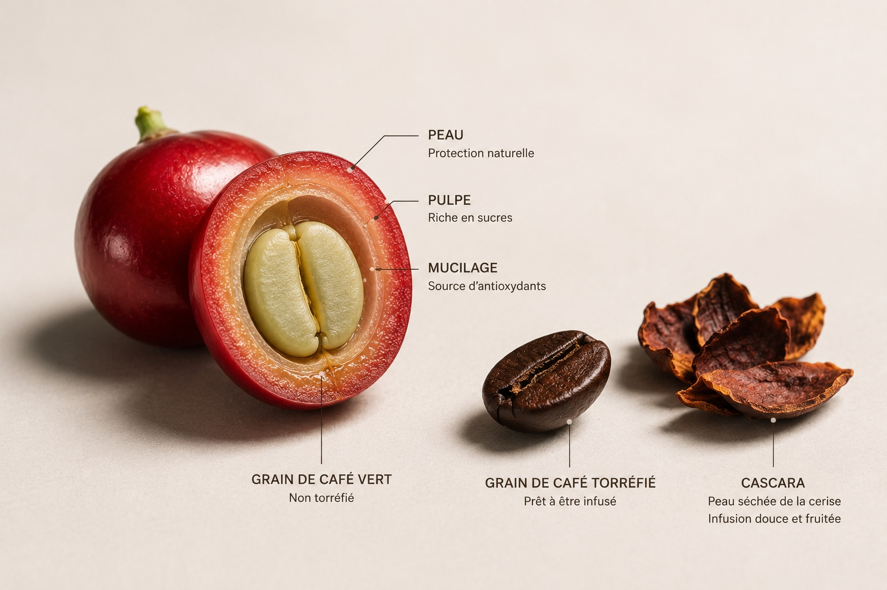
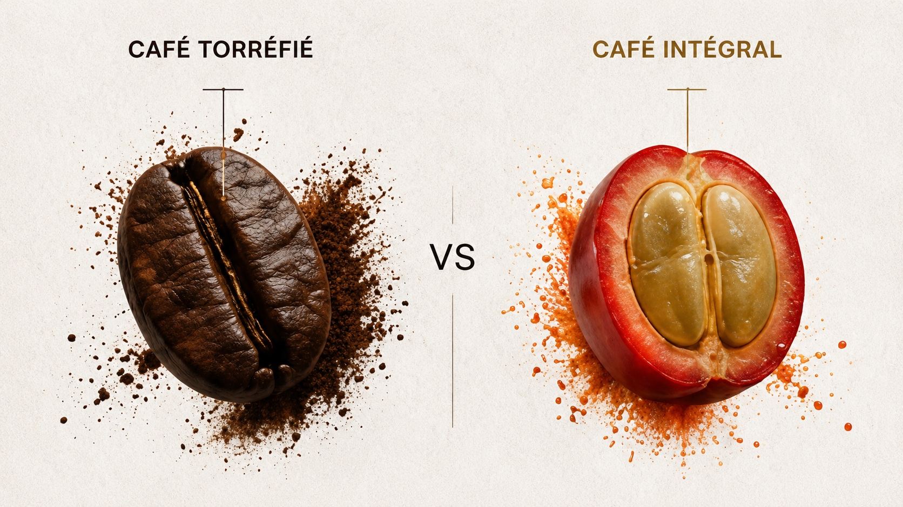
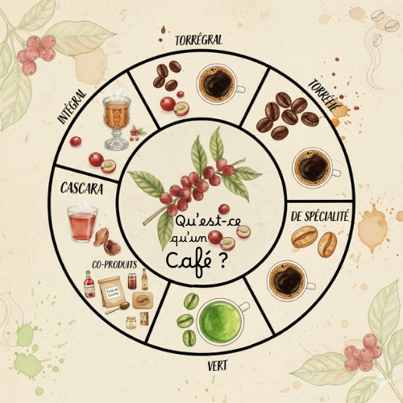

Le café classique stimule.
Mais il laisse souvent une énergie instable: pic, agitation, puis chute.
Café premium nouvelle génération
Vous aimez le café. Mais quelque chose ne va pas: stimulation trop intense, pics d'énergie suivis de chutes, nervosité diffuse, fatigue mentale paradoxale.
Torrégral n'est pas une alternative. Pas un substitut. Pas une boisson aux champignons ni à la chicorée. C'est du café, simplement plus complet.

Mais il laisse souvent une énergie instable: pic, agitation, puis chute.
Elle révèle le goût, mais fait disparaître une partie de la richesse naturelle du fruit.
Le plaisir du café, avec une approche plus complète de la cerise de café.
La différence
Le café torréfié moderne est incomplet. Depuis des siècles, on concentre l'expérience sur le grain torréfié: goût, caféine, stimulation immédiate.
Torrégral réintègre une lecture plus large du fruit: la cerise de café, sa peau, sa pulpe, ses polyphénols, ses antioxydants et ses composés végétaux. Le café devient un moment de discernement, pas une béquille automatique.

Ce que vous allez ressentir
Torrégral ne cherche pas à vous pousser plus fort. Il cherche à rendre votre énergie plus stable, votre attention plus claire, votre rapport au café plus intelligent.
Une tasse pensée pour réduire la dispersion et soutenir une présence plus nette.
Une courbe d'énergie plus régulière, sans la nervosité excessive des pics de caféine.
Les recherches sur la cerise de café et ses polyphénols s'intéressent au BDNF et à la neuroplasticité.
Respect du fruit entier. Respect du corps. Respect de votre énergie.
Pourquoi plus complet ?
Cette image résume le changement de regard: le café n'est pas seulement une graine brune. C'est un fruit. Et une partie majeure de son potentiel se trouve autour du grain.


Pédagogie
Café vert, café torréfié, cascara, Café Intégral, Torrégral: ces mots parlent tous du même fruit, mais pas de la même partie, ni du même niveau de transformation.
Votre rituel quotidien
Choisir le bon angle
Torrégral
Le prix reflète la qualité du processus: sélection de la matière, respect du fruit, transformation douce et recherche d'une expérience plus équilibrée.
Aucune promesse médicale. Juste un café plus équilibré.

FAQ
Oui. Torrégral est du café réel, simplement pensé de manière plus complète. Aucun ingrédient étranger au café n'est nécessaire pour comprendre son intérêt.
Non. Ce n'est pas un faux café. C'est une autre manière de boire le café, plus respectueuse de la cerise dont il est issu.
Non. Torrégral est une boisson alimentaire, un café. Il n'est pas présenté comme un traitement ni comme un complément médical.
Comme votre café habituel: cafetière filtre, piston, expresso ou méthodes douces. Le rituel reste simple.
La différence essentielle n'est pas seulement la caféine, mais l'équilibre recherché avec les composés du fruit de café.